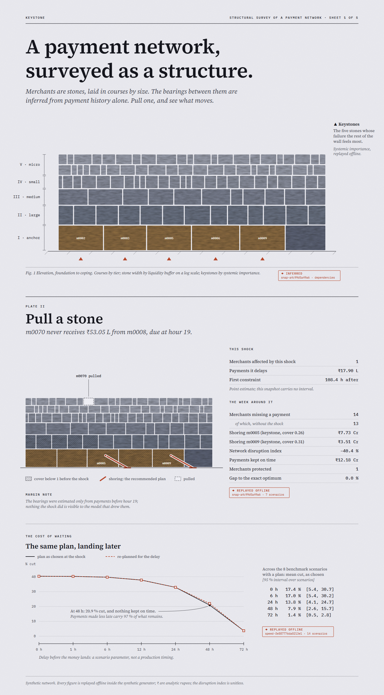
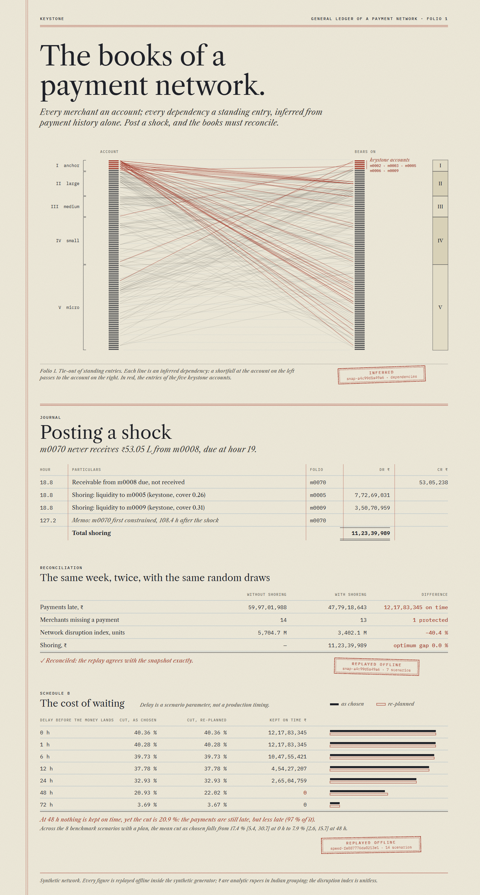
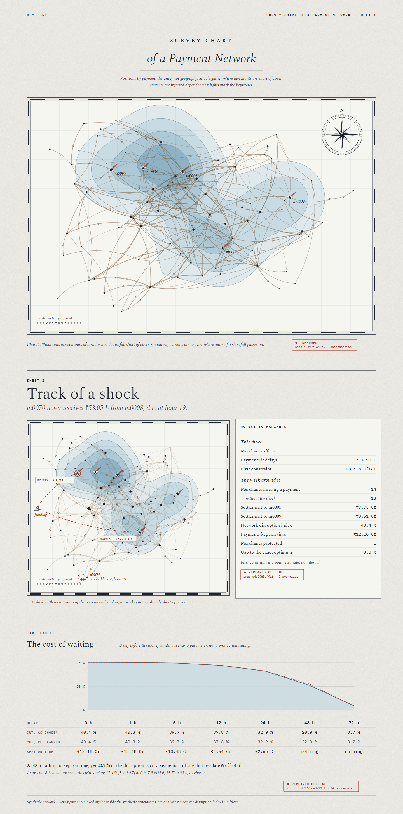

Each board is a hero (no metrics) and one plate, drawn by code from the committed snapshot
snap-a4c99d5a49a64ffd and the value-of-speed artifact speed-fe887776da0213e1. The numbers are identical on all
three; only the visual language differs. Click a board for the full-size SVG.

A The Structural Report
An engineer's survey in numbered plates. Merchants are stones laid in courses by tier; keystones sit in the foundation; the plan is drawn as shoring. The most literal reading of the brief, and the one that carries Plates I to V most naturally.
Critique. Strong at a glance; the wall replaces the hundred-dot grid (exception E4). Risk: the metaphor can read as decoration if the plates lose their dimension lines and captions.
SVG (fonts embedded) · PNG

B The Ledger Room
A printed double-entry ledger. All 216 inferred dependencies as a tie-out between account columns; the shock posted as journal entries; the same week twice as a reconciliation; the cost of waiting as a schedule.
Critique. Most honest about numbers and closest to how a finance reader thinks; the execution ledger in Plate IV would feel native. Risk: dense, and the hero is less inviting to touch than A or C.
SVG (fonts embedded) · PNG

C The Survey Chart
A nautical survey. Merchants placed by payment distance (not geography); shoals where cover is short; dependencies as currents; keystones as lights; the shock as a wreck with settlement routes.
Critique. The most striking hero and the best at showing where strain gathers. Risk: positions are a layout, not a measurement, and need that said every time; the 15 merchants with no inferred dependency sit apart.
SVG (fonts embedded) · PNG